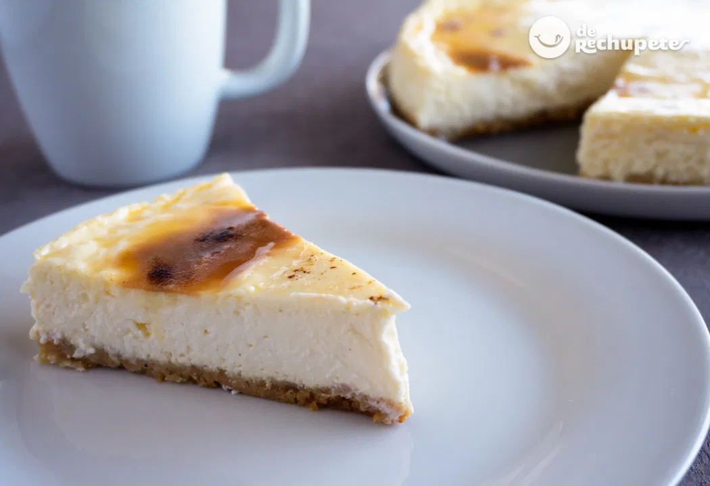

Tarta de Queso

Ingredientes
- 200 ml de leche entera
- 300 ml de nata liquida
- 800 g de queso mascarpone
- 125 g de galletas digestive
- 1 rama de vainilla
- 125 g de azúcar
- 50 g de mantequilla
- 4 huevos
Elaboración
preparación de la crema
- Ponemos en una cazuela a fuego medio la leche, la nata y la vainilla cortada a lo largo. Apartamos cuando esté a punto de hervir y quitamos la vaina.
- Mientras calienta la mezcla, batimos 4 huevos y el azúcar en un bol.
- Echamos el contenido de la cazuela en el bol y mezclamos bien con los huevos y el azúcar, devolvemos todo a la cazuela.
- Calentamos la mezcla a fuego medio sin dejar de remover. Cuando haya espesado hasta tener la consistencia de una natilla la apartamos del fuego y dejamos que enfríe.
- En una batidora de vaso (nunca con varillas para no incorporar aire), mezclamos el queso mascarpone o crema y la mezcla anterior hasta que sea un líquido espeso, homogéneo y sin grumos.
preparación de la base de la tarta
- Trituramos las galletas con las manos o con la ayuda de un tenedor. Calentamos la mantequilla y lo mezclamos todo en un plato hasta conseguir una pasta.
- En un molde desmontable, cubrimos la base con papel de horno. Después la rellenamos por completo con la pasta de galleta. La apelmazamos con una cuchara de manera que cubra toda la superficie hasta el borde.
- Metemos el molde en la nevera 15 minutos.
Elaboración final
- Encendemos el horno a 170º C. Pasados los 15 minutos, vertemos la mezcla en el interior del molde con cuidado para no romper la base.
- Alisamos la superficie con una cuchara y metemos en el horno durante 60 minutos o hasta que cuaje. Conviene meter también un recipiente con agua en la parte inferior del horno para que el calor se distribuya uniformemente.
- Dejamos que la tarta enfríe en el horno. La pasamos a la nevera para dejarla toda la noche (o como mínimo 8 horas). Desmoldamos.
- Batimos dos yemas de huevo con cinco cucharadas de azúcar y lo extendemos sobre la tarta con la ayuda de una brocha.
- Quemamos la superficie con un soplete o un quemador de hierro caliente.
Home